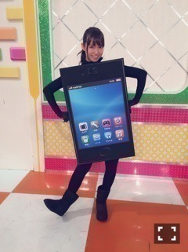
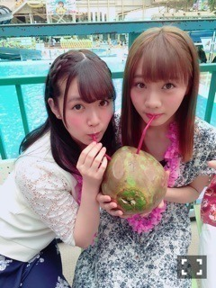

| 2016/06 09 Thu | ひめたん-0o0-その644 |
前回のブログにたくさんのコメント
本当にありがとうございました。
少しずつ読んでいます、
全部読み終わるのに
もう少し時間がかかりそうですが
必ず全部読ませていただきます。
全力で構えてた7thの頃とは
ちょっと心持ちが違うかな、
私は私らしく！
もちろん成長する気持ちも忘れませんが
等身大で頑張ろうと思います！
どうかこれからも
よろしくお願いします( ˇωˇ )

私らしく......
NOGIBINGO!6
皆さんみてくだったかな？
みんなの私服姿というのは
制服とはまた違って新鮮で可愛かったですね
アシスタントの私はスマホになりました！
いくちゃん、ふたりでの
プライベートのやりとり公開してごめんね。
もう番組で出したりしないので、
これからも素敵な歌を
たくさん送ってください( ˆωˆ )
さて、6/6はTopYell発売日。
連載も何回目になったんでしょうか
いつもありがたいです～
今回は空中ヨガに挑戦しました！
久々にアクティブです、
なかなか身体張ってます、でも楽しかった！
普段経験できないことを
させていただける機会って
大切だよね( ˆωˆ )
そして6/10はマーキー発売日。

ゆったんと2人で
グラビア撮って頂きました♡
インタビューでは、
東北でのアンダーライブのこと、
2ndアルバムのことなど
お話させていただいています。
チェックよろしくね～( ˇωˇ )
リアルサウンドさんにて
能條・中元でインタビューして頂いてます！
乃木坂46 中元日芽香&能條愛未が明かす、
グループの"演劇性"と
アンダーライブ革新の理由
私はアンダーライブ、愛未はじょしらく、
2人で2ndアルバムについて
たっぷりお話ししてます( ˆωˆ )
近々告知したいなって言ってたうちの一つ。
是非読んでみて下さい！

ココナッツウォーター！らぶ！！
さて、前回らじらー！本編の
最後にお話しましたが
次回の乃木坂週である6/19は
中元、お休みさせていただきます( >_< )
くうぅぅ～～泣ける～～
私の相方・愛未ちゃんが
乃木坂コーナー2時間通して出演、さらに
21時台に和田まあやちゃん
22時台に伊藤かりんちゃんがゲスト出演！
愛未ちゃん不安がっていたので
是非メール送ってあげてください、
とはいえアシスタントの座が奪われることは
まじで勘弁。あの子は器用だからね。
声優アーツのゲストさんやメール募集など
詳しいことは追ってお知らせしますね！
さて、明日からいよいよ
2ndアルバム
「それぞれの椅子」 発売記念
乃木坂46時間TVスタート！
各インターネット局をジャックして
46時間の生配信をお届けします
公式サイトでもカウントダウンが
始まっていますね( ˆωˆ )
今回もいろんな企画を用意してるので
皆さん一緒に盛り上がりましょう～！
あ、でも、無理はせず、
眠くなったらしっかり寝てくださいね。
～お知らせ～
6/10-12 46時間TV
6/12 千原せいじのバズ☆ドル(め～テレ)
6/15 EX大衆
6/17 AKB新聞
WEB
掲載中 リアルサウンド
「ハルジオンが咲く頃」特典イベント
サイン会がありました！
来てくださった方ありがとう～＊
(＊´・ω・＊)
コメント(753)
2016/06/09 23:42